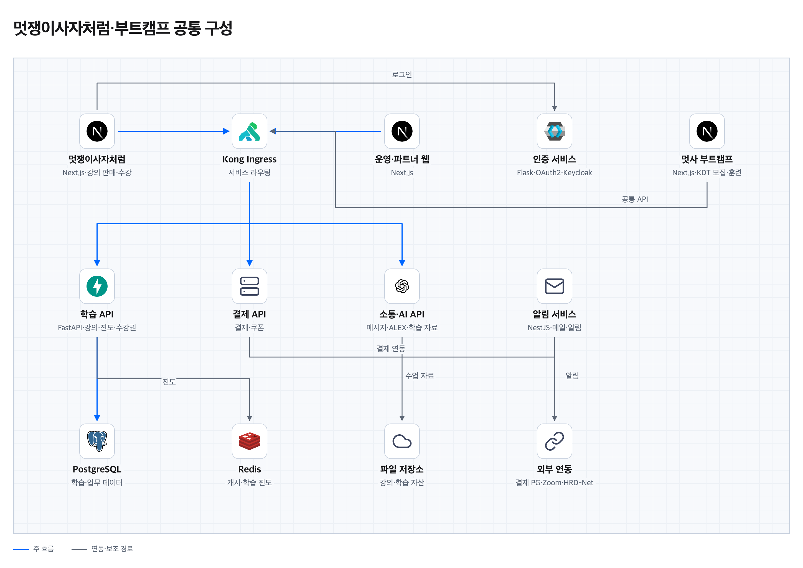
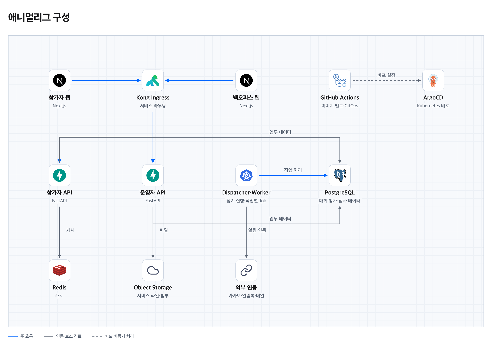
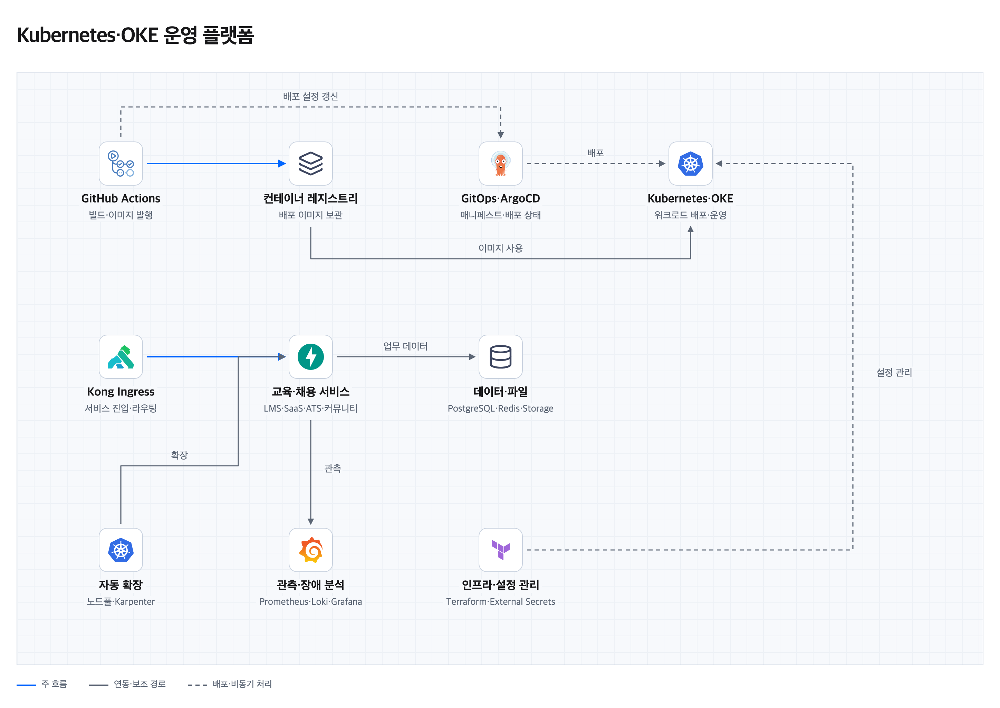

포트폴리오 목록
서비스별 아키텍처·흐름
서비스별 구성과 주요 처리 흐름, 개발 경험을 정리했습니다.
캠프파이어
채팅·화상수업·녹화·출석을 운영하는 비대면 교육 플랫폼입니다. ALEX로 수업 질문과 복습을 지원합니다.
멋쟁이사자처럼
유료·국비 단과 강의의 탐색, 결제와 수강을 제공하는 대표 서비스입니다. 멋사 부트캠프와 인증·학습·결제 기반을 공유합니다.
멋쟁이사자처럼·부트캠프 공통 구성

두 서비스의 웹과 운영 화면을 공통 인증, 학습·결제·AI API에 연결했습니다.
멋사 부트캠프
KDT 부트캠프 모집·지원부터 수업과 훈련 행정, 취업지원까지 이어지는 서비스입니다. 라이브룸과 미래이력서는 수업 운영과 지원자 경험을 돕습니다.
멋사 커리어 · ATS
부트캠프 수료생과 기업을 연결하는 채용 플랫폼입니다. 공고·지원·전형과 취업 증빙, 취업 집계를 지원합니다.
멋사 커리어(ATS) 구성
 지원자·기업 API와 운영자 API를 나누고, 채용 데이터·캐시·정기 작업·알림을 연결했습니다.
지원자·기업 API와 운영자 API를 나누고, 채용 데이터·캐시·정기 작업·알림을 연결했습니다.
SaaS · B2B LMS
기업·교육기관이 자기 도메인과 독립된 로그인으로 교육을 운영하는 학습관리 서비스입니다. 해커톤과 채용 이벤트에도 활용합니다.
SaaS LMS/해커톤 구성
 지원자·운영자 API와 배치를 분리하고, 파일 직접 업로드와 PgBouncer·PostgreSQL 연결을 구성했습니다.
지원자·운영자 API와 배치를 분리하고, 파일 직접 업로드와 PgBouncer·PostgreSQL 연결을 구성했습니다.
애니멀리그
해커톤 참가자와 운영자가 대회에 참여하고 관리하는 서비스입니다.
애니멀리그 구성

참가자·운영자 API와 작업 실행 경로를 나누고, 데이터 저장과 Kubernetes 배포를 연결한 구성입니다.
공통 인프라
교육·채용 서비스의 관계와 공통 배포·운영 기반입니다.
교육·채용 서비스 연결 구조
 강의 탐색·부트캠프 지원·수업·취업지원의 흐름과 고객사별 B2B LMS의 독립 운영 관계입니다.
강의 탐색·부트캠프 지원·수업·취업지원의 흐름과 고객사별 B2B LMS의 독립 운영 관계입니다.
Kubernetes·OKE 운영 플랫폼

GitHub Actions의 이미지 빌드부터 ArgoCD 배포, Kubernetes·OKE 운영으로 이어지는 흐름입니다.